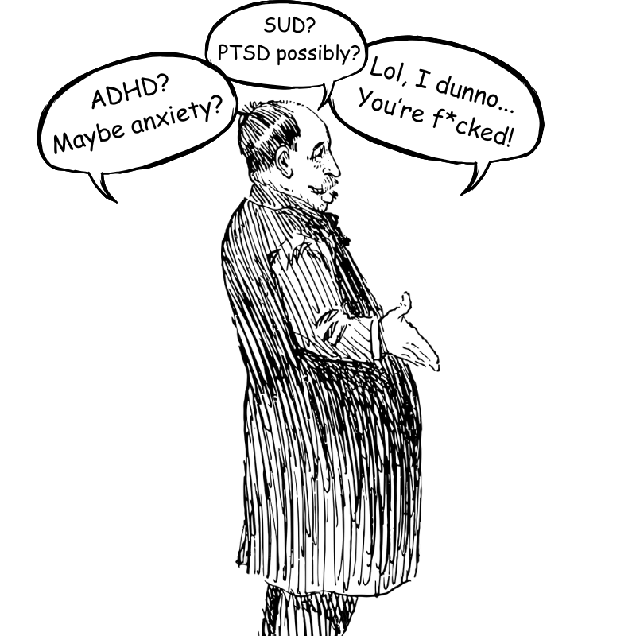

For years I lived under a tower of diagnoses: ADHD, Generalized Anxiety Disorder, Substance Use Disorder, Suicidal Ideation — at one point even possible autism was mentioned. Each one explained a piece of the puzzle. None of them captured what was actually happening inside me. Together they read like a file folder stuffed with symptoms instead of a story.
On paper, I looked functional. Fast-paced work environment, performed well, kept up socially — alcohol saw to that. Presented as confident. Internally I was in constant crisis. Thoughts racing, chest tight, emotions hovering just under the surface — while every coping mechanism I had was quietly making things worse. It felt like running a marathon with no finish line, no rest, and no explanation for why everything hurt so damn much.
It took me an embarrassingly long time to realize the diagnoses weren't wrong — they were just painfully incomplete. They described the smoke, not the fire. The real driver was trauma. Not the obvious kind. The quiet, early, cumulative kind — unrecognized by clinicians and actively avoided by me. Until I faced that, everything else was symptom management: an endless cycle of damage control that never once touched what was actually broken.
This page is about what it costs when a system treats your survival as a disorder — and never once asks what you survived. It's about how trauma shapes brains, bodies, and behaviour in ways that look indistinguishable from discrete mental health diagnoses. And it's about what gets lost — emotionally, psychologically, sometimes permanently — when we keep fixing the leaks without ever finding the busted pipe.
// Before You Keep Reading:
This page isn't here to make you question your diagnosis. It's here to offer context that the system may never have given you — especially if no one ever thought to ask what happened to you before the symptoms started.
This isn't about blame. It's an honest question: are there pieces of your history you've kept off the table? If the answer is yes, it may be worth sitting with why. Not to tear anything open before you're ready. But because those pieces have a way of quietly holding everything else back for as long as they stay buried.

By the time I entered serious treatment, I was already carrying a full roster of diagnoses. ADHD explained the distractibility, the restlessness, the impulsivity. Anxiety explained the overthinking, the tension that never quit, the low-grade certainty that something bad was always about to happen. Substance use disorder needed no explanation. And at one point, someone floated the possibility of autism — which, honestly, made a certain kind of sense: the hyperfixation, the social exhaustion, the bone-deep feeling that everyone else had been handed a manual for navigating life at birth while I had apparently been dropped on my head and handed a bill.
And while each label made sense on its own, together they felt like a filing cabinet full of symptoms with no file labelled cause. Lots of what. Zero why.
In all that time, across all those appointments, not one person thought to ask what had happened to me. The questions were always a variation of the same three:
Nobody asked why. And if they had, I'm not sure I could have told them. I'd already swallowed the story that this was simply who I was — a disjointed brain, an outcast personality, a genuinely chaotic person trying to function in a world that made perfect sense to everyone else and somehow none at all to me. I didn't have trauma. I just had problems. That's what I told myself. That's what I believed.
The truth — the one that took years and real damage to arrive at — is that those symptoms didn't appear out of nowhere. They were responses. Survival strategies. A nervous system doing exactly what it was built to do after years of exposure to things no child should have to endure, let alone quietly absorb as normal.
Unless trauma is part of the conversation, much of what gets labeled as "disorder" is actually a logical response to pain that nobody ever acknowledged.
Anxiety, ADHD, depression, borderline personality disorder, Substance Use Disorder — or anything else. Think back to those appointments. Did anyone ask what happened to you? Not what you were struggling with — what happened. Childhood. Safety. The family environment. Experiences that might have shaped how your nervous system learned to read the world.
For many, the answer is no. And that gap is exactly what this page is about.
Every time someone receives a mental health diagnosis — especially when there are several at once (GAD + ADHD + Depression, SUD plus anxiety, the whole cluster) — clinicians should screen for childhood or developmental trauma. Not to replace diagnoses or throw out medications. To put the symptoms in context. Because context is the difference between a treatment plan that manages the surface and one that actually reaches the root.
Why it matters: Trauma-driven symptoms don't respond to treatment the way standalone conditions do. You can medicate the anxiety and the anxiety comes back. You can address the ADHD and still feel like you're drowning. You can complete the program and relapse anyway. Not because the treatment failed — because the treatment never asked the right question. When trauma is part of the equation and goes unaddressed, the result is predictable: medication increases, revolving-door appointments, years of care that circles the same drain without ever getting closer to the source.
Bottom line: Whatever the label — and especially when there are several — screen for trauma first. Medication can stabilize. Therapy can reframe. But neither one heals what nobody has named yet.
The cards below show how trauma presents through the lens of common diagnoses — ADHD, anxiety, depression, SUD, BPD, OCD, ODD. They're illustrations, not replacements for clinical assessment. The point isn't to hand you a new label. It's to show you what the current ones might be missing.
Trauma doesn't always look like trauma. It's not always flashbacks, nightmares, or visible damage. More often it shows up quietly — in the behaviours you've written off as personality, in the diagnoses that keep stacking without anything ever resolving, in the exhausting sense that you've tried everything and nothing quite reaches whatever is actually wrong. What gets labeled as ADHD, anxiety, depression, BPD, or OCD is sometimes exactly that. And sometimes it's a nervous system that learned survival so thoroughly it never got the signal that the threat was over.
Here's how that plays out:
Important note: Nothing on this page is meant to suggest that ADHD, GAD, Depression, BPD, OCD, or Substance Use Disorder aren't real, valid, clinically distinct conditions. They are. Each has its own diagnostic criteria, its own neurobiological basis, and its own evidence-based treatment path. They can — and often do — exist completely independently of trauma.
The point here is narrower and more specific: trauma can mimic, amplify, or sit underneath these presentations in ways that go undetected when no one asks about it. When that happens, treatment addresses the surface while the root continues doing what roots do — feeding everything above it. The goal isn't to replace one diagnosis with another. It's to make sure the full picture is in the room.
Substance Use Disorder is often the most devastating example of trauma being mistaken for something else. When viewed as a behavioural failure, moral weakness, or character flaw, the entire meaning of addiction is lost. What looks like self-destruction is frequently a form of self-medication — an attempt to manage unbearable internal states that have gone unseen and untreated.
When trauma goes unrecognized, treatment focuses on behaviour — detox, abstinence, compliance — rather than the underlying distress that drives it. The result can be tragic: revolving-door rehab, punitive relapse responses, and people dying from misunderstood pain.
Clinically: Substance Use Disorder involves impaired control, compulsive use, and continued behaviour despite consequences. But trauma research reframes it as a maladaptive coping mechanism rooted in neurobiological changes to reward, stress, and attachment systems — the nervous system’s attempt to regulate what the environment never did.
When addiction is treated as a moral or behavioural issue instead of a trauma-driven regulation issue, outcomes can be devastating. People are shamed for survival responses, punished for pain, and left to face withdrawal, stigma, and relapse in isolation.
What gets labeled as inattention or impulsivity can actually be the after-image of chronic hypervigilance. A traumatized brain isn’t lazy—it’s exhausted from years of scanning for danger and struggling to prioritize in an unsafe world. What looks like “not trying hard enough” is often the nervous system redirecting energy toward threat detection instead of executive function.
Note: Trauma can mimic or worsen ADHD symptoms, but the two can also coexist. Early adversity can amplify executive function challenges in people who already have genuine neurodevelopmental differences.
Clinically: ADHD is defined as a neurodevelopmental disorder marked by persistent patterns of inattention, hyperactivity, and impulsivity, often associated with dysregulation of dopamine/norepinephrine signaling in frontostriatal circuits (prefrontal cortex and basal ganglia).
Chronic anxiety is often the echo of a body that learned the world was not safe. It’s often less a malfunction than a form of body-based memory. Many trauma survivors don’t realize that their constant vigilance is their nervous system trying to prevent past chaos from repeating.
Clinically: Anxiety disorders involve excessive fear/worry that is disproportionate to actual threat, linked to heightened amygdala reactivity and dysregulated sympathetic arousal with impaired prefrontal inhibition of threat responses.
What's called "depression" can sometimes look like the body's emergency brake — after sustained stress or threat, the system may collapse into withdrawal and shutdown. This is one lens clinicians and researchers use to understand how trauma and depression intersect; it doesn't explain all depression, and the mechanisms are still actively studied. But for trauma survivors, the overlap between shutdown and depressive symptoms is real and often goes unexamined.
Clinically: Major Depressive Disorder features persistent low mood and anhedonia with changes in sleep, appetite, cognition, and energy, often associated with altered monoamine signaling, overactive stress pathways, and reduced activity in reward circuitry.
Traits commonly labeled as Borderline Personality Disorder often overlap with the scars of early attachment trauma. The emotional storms, unstable identity, and push–pull patterns aren't signs of manipulation or volatility—they often trace back to a nervous system primed for abandonment and threat.
The diagnosis itself is legitimate and can be helpful for some. In clinical practice, BPD assessments typically do explore childhood adversity and attachment history—it's part of understanding the presentation. But understanding the trauma roots behind these reactions can shift the focus from pathology to pain, opening the door to more compassionate, effective care.
Note: BPD is included here not to dismiss the diagnosis, but to highlight how deeply intertwined it is with developmental trauma—and why addressing that trauma directly often transforms treatment outcomes.
Clinically: Borderline Personality Disorder is defined by pervasive instability of affect, relationships, and self-image with impulsivity and recurrent interpersonal crises, linked to affective dysregulation, heightened threat sensitivity, and attachment system reactivity.
What gets labeled as Oppositional Defiant Disorder is often the survival instinct of a child who never felt safe. “Defiance” is frequently a protective stance—an attempt to control an environment that once felt uncontrollable, unpredictable, or dangerous. Kids who shut down, argue, refuse, or “explode” are often showing us their trauma history, not a conduct problem. This isn’t manipulation. It’s adaptation.
Clinically: Oppositional Defiant Disorder is defined by a persistent pattern of angry or irritable mood, argumentative or defiant behaviour, and vindictiveness toward authority figures. Trauma-informed perspectives emphasize that these behaviours often arise from attachment disruption, chronic stress, emotional neglect, or unstable caregiving—making trauma assessment essential before diagnosis.
Trauma can trigger, worsen, or closely resemble OCD — but the relationship runs in both directions. Unresolved trauma can drive compulsive rituals as an attempt to reclaim control; it can also amplify the severity of genuine OCD that was already present. What looks irrational may carry a trauma-born logic — but this is one area where the overlap is complex enough to warrant proper clinical assessment rather than assumptions either way.
Note: Trauma-linked rituals often track specific triggers or safety themes and can fluctuate with context; in classic OCD, obsessions and compulsions tend to be persistent and ego-dystonic, showing up even without a trauma cue.
Clinically: Obsessive–Compulsive Disorder is characterized by intrusive, distressing obsessions and repetitive compulsions performed to reduce anxiety, associated with dysfunction in cortico-striato-thalamo-cortical loops and impaired error-monitoring.
When symptoms like anxiety, depression, or ADHD are treated in isolation — without anyone ever asking about trauma — the path to healing doesn't just get harder. For a lot of people, it becomes a treadmill. Faster pace, more effort, same location.
If your diagnosis is a survival response rooted in trauma, treating only the symptom isn't treatment. It's maintenance. It's clinically endorsed rumination dressed up as care — and it can go on for years before anyone stops to ask whether the foundation was ever actually looked at.
When trauma is the missing piece, here's what gets lost:
The diagnoses may have been accurate. The treatment may have been well-intentioned. But accurate and well-intentioned aren't enough when the real driver is sitting in a part of the history nobody thought to open.
That's not a failure of the people who tried to help. It's a failure of a system that still doesn't ask the most important question first.
Follow the next step in order, or branch out into related topics.
These sources ground the page's claims about how trauma can mimic or amplify ADHD, BPD, OCD, anxiety, depression, and SUD — and why trauma-informed assessment and phase-oriented treatment matter. Educational use only; not medical advice.